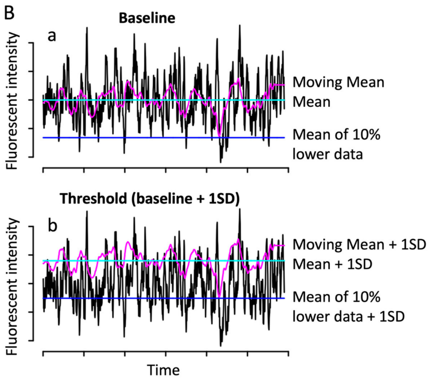

Calculating DF/F#
This table summarizes Calcium Activity (ΔF/F) detection methods reviewed by Paudel et al. (2024).
Method |
How It’s Performed |
Pros |
Cons |
|---|---|---|---|
Manual Spike Counting |
Visual inspection of raw fluorescence or dF/F traces to count events. |
Simple; no code needed. |
Subjective; non-scalable; low reproducibility. |
dF/F Thresholding |
Compute (F − F₀)/F₀ and define a fixed or adaptive threshold for events. |
Widely used; compatible with GCaMP, Fluo dyes. |
Sensitive to F₀ definition; arbitrary thresholds can bias results. |
Z-Score Thresholding |
Normalize trace by mean/SD, define events above N standard deviations. |
Removes baseline drift; good for noisy data. |
Sensitive to noise if SD is low; assumes Gaussian distribution. |
Percentile Baseline Subtraction |
Use a moving window to define F₀ as low percentile (e.g., 10–20th) of the trace. |
Adaptive baseline; handles long-term drift. |
Choice of window size/percentile affects sensitivity. |
Ratiometric Imaging (Fura, YC2) |
Compute ratio of Ca²⁺-sensitive and insensitive fluorophores per ROI. |
Controls for volume/motion artifacts; yields [Ca²⁺]. |
Requires dual excitation/emission; reduced spatial/temporal res. |
Photon Counting (Aequorin) |
Count emitted photons per ROI/pixel over time; map to Ca²⁺ levels via calibration. |
Quantitative; good dynamic range. |
Low spatial resolution; complex calibration. |
Image Subtraction (Frame-to-Frame) |
Compute ΔF = Fₙ − Fₙ₋₁ or F − background to detect sudden changes. |
Simple, fast; used for wave detection. |
Sensitive to noise; misses gradual changes. |
Savitzky-Golay Filtering |
Smooth trace to reduce noise while preserving spikes. |
Good for noisy signals. |
Requires tuning; can mask small or fast events. |
Tensor Voting / Cluster Detection |
Identify spatially coordinated activity from 2D/3D image stacks. |
Detects population events (e.g., waves). |
Not standard; needs spatially dense data. |
Standard Deviation (SD) Masking |
Define active frames/regions where ΔF exceeds N×SD of baseline. |
Objective thresholding for event detection. |
Threshold choice heavily affects results. |
{kind=link}

Example of ΔF/F trace showing different baseline choices. Adapted from Fig. 1 of .#